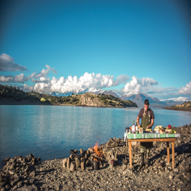

Empece de bachero, pero mientras lavaba nunca perdía de vista a los cocineros con los que me tocaba compartir el espacio. Más tarde viajé, recorrí mercados, comprendí la importancia de la calidad de los productos y la enorme cantidad de recetas que podría crear.
Quien soy..
Volví decidido a estudiar y empezé la carrera en el Colegio de Gastronomía Gato Dumas. Mientras cursaba logré conseguir trabajo con excelentes profesionales como Matías Kyriazis, Hernán Gipponi y Darío Gualtieri. Aprendí muchísimo trabajando en sus restaurantes.Mis cursos>>
Luego de haber trabajado en todos los estilos de cocina decidí volcarme de lleno a la cocina simple, de producto simple con un estilo personal e único. Siempre en la búsqueda de brindar felicidad a clientes y amigos mediante una buena comida. Mejoro tu carta>>